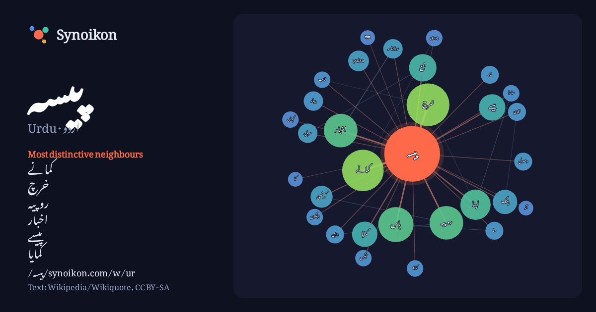

اردو · Urdu · popular word
پیسہ
“money” · The words found around it in 533 instances from Urdu Wikipedia, Wikiquote.

Most distinctive neighbours
- کمانے 31×
- خرچ 29×
- روپیہ 20×
- اخبار 15×
- پیسے 13×
- کمایا 13×
- paisa 8.9×
- بینک 8.7×
- کرنسی 8.5×
- جمع 8.5×
- پاس 8.4×
- پیار 7.0×
- ایزی 7.0×
- دمڑی 7.0×
- روزنامہ 6.9×
- اپنا 6.9×
- سرمایہ 6.2×
- زر 6.2×
- کماتا 6.0×
- جیب 5.8×
× = how many times more often than in general Urdu Wikipedia text.
Most frequent neighbours
- سے 113
- میں 112
- کا 82
- اس 73
- لیے 54
- تھا 53
- نے 53
- نہیں 45
- وہ 43
- کو 40
- کیا 36
- خرچ 34
- یا 34
- کر 33
- کمانے 32
- بھی 27
- جس 26
- کرنے 24
- پاس 23
- گیا 22
In context
- پیسہ (Paisa) (بنگالی: পয়সা،نیپالی: पैसा، ہندی: पैसा، اردو: پیسہ، عربی: بيسة) کئی ممالک میں ایک مالیاتی اکائی ہے۔ بھارت، نیپال اور پاکستان میں پیسہ Wikipedia snippets · پیسہ
- پیسہ اخبار ایک اردو روزنامہ تھا، جسے منشی محبوب عالم نے جنوری 1887ء میں فیروزوالا سے جاری کیا۔ یہ ہفتہ وار اخبار آٹھ صفحات پر مشتمل تھا۔ قیمت فی پرچہ ایک Wikipedia snippets · پیسہ اخبار
- ایزی پیسہ ایک پاکستانی موبائل پرس ، موبائل کی ادائیگی اور برانچ لیس بینکاری خدمات فراہم کنندہ ہے۔ اس کا آغاز 2009ء میں ٹیلی نار پاکستان نے تعمیر بینک کے Wikipedia snippets · ایزی پیسہ
- پیسہ یہ پیسہ (انگریزی: Paisa Yeh Paisa) 1985ء میں منظر عام پر آنے والی ایک فلم ہے، جس کی ہدایت کاری Sohanlal Kanwar نے کی۔ اس فلم میں جیکی شروف، میناکشی Wikipedia snippets · پیسہ یہ پیسہ
- گیم پیسہ لڑکی (انگریزی: Game Paisa Ladki) 2018ء میں منظر عام پر آنے والی ایک فلم ہے۔ انگریزی ویکیپیڈیا کے مشارکین (3 مئی 2026)۔ "Game Paisa Ladki" Wikipedia snippets · گیم پیسہ لڑکی
- پیسہ یا پیار (انگریزی: Paisa Ya Pyar) 1969ء میں منظر عام پر آنے والی ایک فلم ہے، جس کی ہدایت کاری جوار سیتارامن نے کی۔ اس فلم میں اشوک کمار نے اپنی اداکاری Wikipedia snippets · پیسہ یا پیار
- قسمت محبت پیسہ دلی (انگریزی: Kismat Love Paisa Dilli) 2012ء میں منظر عام پر آنے والی ایک مزاحیہ فلم ہے، جس کی ہدایت کاری Sanjay Khanduri نے کی۔ اس فلم Wikipedia snippets · قسمت محبت پیسہ دلی
- پیسہ وصول (2004ء فلم) (انگریزی: Paisa Vasool (2004 film)) 2004ء میں منظر عام پر آنے والی ایک فلم ہے، جس کی ہدایت کاری Srinivas Bhashyam نے کی۔ اس فلم میں Wikipedia snippets · پیسہ وصول (2004ء فلم)
More Urdu words
Precomputed on 2026-10-09 with default settings (±5 words, medium corpus). The interactive map can refresh it with live data.